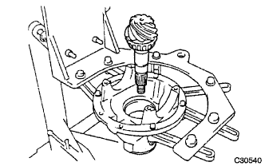
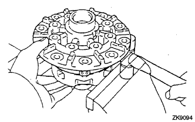

ЧАШКА ЗАДНЕГО ДИФФЕРЕНЦИАЛА В СБОРЕ (для моделей без блокировки дифференциала) > РАЗБОРКА |
| 1. ЗАФИКСИРУЙТЕ ЧАШКУ ЗАДНЕГО ДИФФЕРЕНЦИАЛА В СБОРЕ НА МЕСТЕ |
 |
| 2. ПРОВЕРЬТЕ БИЕНИЕ ЗАДНЕГО СОЕДИНИТЕЛЬНОГО ФЛАНЦА ЗАДНЕЙ ВЕДУЩЕЙ ШЕСТЕРНИ В СБОРЕ |
С помощью индикатора часового типа измерьте биение соединительного фланца по вертикали и горизонтали.
| Параметр / Устройство | Заданные условия |
| Вертикальное биение | 0,14 мм (0,00551 дюйма) |
| Горизонтальное биение | 0,14 мм (0,00551 дюйма) |
| *a | Вертикальное биение |
| *b | Горизонтальное биение |
| 3. ПРОВЕРЬТЕ БИЕНИЕ КОРОННОЙ ШЕСТЕРНИ ДИФФЕРЕНЦИАЛА |
С помощью индикатора часового типа проверьте биения зубчатого венца.
| 4. ПРОВЕРЬТЕ БОКОВОЙ ЗАЗОР МЕЖДУ ЗУБЬЯМИ В ГЛАВНОЙ ПЕРЕДАЧЕ ДИФФЕРЕНЦИАЛА |
 |
С помощью индикатора часового типа проверьте боковой зазор между зубьями в главной передаче.
| 5. ПРОВЕРЬТЕ ПРЕДНАТЯГ ВЕДУЩЕЙ ШЕСТЕРНИ ДИФФЕРЕНЦИАЛА |
 |
С помощью динамометрического ключа измерьте преднатяг для зазора между ведущей и коронной шестернями.
| 6. ПРОВЕРЬТЕ СУММАРНЫЙ ПРЕДНАТЯГ |
|
С помощью динамометрического ключа измерьте преднатяг в положении касания зубьев ведущей и коронной шестерен.
С помощью динамометрического ключа измерьте суммарный преднатяг.
| 7. СНИМИТЕ ГАЙКУ ЗАДНЕЙ ВЕДУЩЕЙ ШЕСТЕРНИ |
С помощью SST и молотка ослабьте накерненную часть гайки задней ведущей шестерни.
Удерживайте соединительный фланец с помощью SST.
С помощью торцевого ключа с головкой 30 мм отверните гайку задней ведущей шестерни.
| 8. СНИМИТЕ СОЕДИНИТЕЛЬНЫЙ ФЛАНЕЦ ЗАДНЕЙ ВЕДУЩЕЙ ШЕСТЕРНИ В СБОРЕ |
С помощью SST снимите соединительный фланец задней ведущей шестерни в сборе.
| 9. СНИМИТЕ САЛЬНИК ЧАШКИ ЗАДНЕГО ДИФФЕРЕНЦИАЛА |
С помощью SST снимите сальник чашки заднего дифференциала с чашки дифференциала.
| 10. СНИМИТЕ МАСЛООТРАЖАТЕЛЬ ВЕДУЩЕЙ ШЕСТЕРНИ ЗАДНЕГО ДИФФЕРЕНЦИАЛА |
| 11. СНИМИТЕ ПЕРЕДНИЙ КОНИЧЕСКИЙ РОЛИКОВЫЙ ПОДШИПНИК ЗАДНЕЙ ВЕДУЩЕЙ ШЕСТЕРНИ (ВНУТРЕННИЙ) |
 |
С помощью SST снимите передний конический роликовый подшипник задней ведущей шестерни (внутреннее кольцо) с ведущей шестерни.
| 12. СНИМИТЕ ПЕРЕДНИЙ КОНИЧЕСКИЙ РОЛИКОВЫЙ ПОДШИПНИК ЗАДНЕЙ ВЕДУЩЕЙ ШЕСТЕРНИ (НАРУЖНЫЙ) |
| 13. СНИМИТЕ КОРПУС ДИФФЕРЕНЦИАЛА В СБОРЕ |
Нанесите на крышку подшипника и чашку дифференциала сборочные метки.
| *a | Метка |
Выверните 4 болта и снимите 2 крышки подшипников дифференциала.
 |
С помощью молотка и отвертки снимите 2 плоских шайбы.
Снимите корпус заднего дифференциала в сборе с чашки дифференциала.
| 14. СНИМИТЕ ВЕДУЩУЮ ШЕСТЕРНЮ ДИФФЕРЕНЦИАЛА |
|  |
Снимите ведущую шестерню и распорную втулку подшипника с чашки дифференциала.
| 15. СНИМИТЕ ЗАДНИЙ КОНИЧЕСКИЙ РОЛИКОВЫЙ ПОДШИПНИК ЗАДНЕЙ ВЕДУЩЕЙ ШЕСТЕРНИ |
С помощью SST и пресса выжмите роликовый подшипник (внутренний) из ведущей шестерни.
| 16. СНИМИТЕ ПЕРЕДНИЙ КОНИЧЕСКИЙ РОЛИКОВЫЙ ПОДШИПНИК ЗАДНЕЙ ВЕДУЩЕЙ ШЕСТЕРНИ |
С помощью SST снимите роликовый подшипник (наружный) с чашки.
С помощью латунного стержня и молотка выбейте маслонакопительное кольцо из чашки.
| 17. СНИМИТЕ ЗАДНИЙ КОНИЧЕСКИЙ РОЛИКОВЫЙ ПОДШИПНИК ЗАДНЕЙ ВЕДУЩЕЙ ШЕСТЕРНИ |
С помощью SST выбейте задний конический роликовый подшипник (наружный) из чашки.
| 18. СНИМИТЕ ПЛОСКУЮ ШАЙБУ ВЕДУЩЕЙ ШЕСТЕРНИ ЗАДНЕГО ДИФФЕРЕНЦИАЛА |
| 19. СНИМИТЕ КОРОННУЮ ШЕСТЕРНЮ ДИФФЕРЕНЦИАЛА |
 |
Нанесите метки на коронную шестерню и корпус дифференциала.
| *a | Метка |
Выверните 12 установочных болтов коронной шестерни.
 |
Обстучите коронную шестерню молотком с пластмассовым покрытием, чтобы снять ее с корпуса дифференциала.
| 20. ПРОВЕРЬТЕ БИЕНИЕ КОРПУСА ДИФФЕРЕНЦИАЛА В СБОРЕ |
Установите подшипник корпуса заднего дифференциала в корпус дифференциала.
Установите корпус дифференциала в чашку дифференциала.
Установите 2 крышки подшипников на чашку дифференциала и закрепите их 4 болтами.
С помощью индикатора часового типа измерьте биение корпуса дифференциала.
Снимите корпус дифференциала.
Снимите подшипник корпуса заднего дифференциала.
| 21. СНИМИТЕ ПОДШИПНИК КОРПУСА ЗАДНЕГО ДИФФЕРЕНЦИАЛА |
 |
С помощью SST снимите 2 подшипника с корпуса дифференциала.
| 22. РАЗБЕРИТЕ КОРПУС ДИФФЕРЕНЦИАЛА |
Нанесите метки на левый и правый корпусы.
| *a | Метка |
Выверните 8 болтов.
|  |
С помощью молотка с пластмассовым покрытием отсоедините правый и левый корпусы.
 |
Снимите с корпуса дифференциала детали, показанные на рисунке.
| *1 | Полуосевая шестерня |
| *2 | Упорная шайба полуосевой шестерни |
| *3 | Крестовина |
| *4 | Ведущая шестерня (сателлит) |
| *5 | Упорная шайба ведущей шестерни |